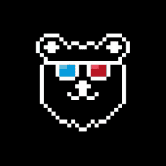
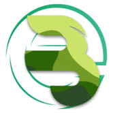
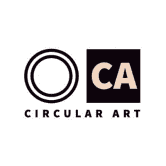
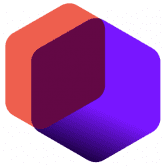
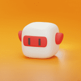
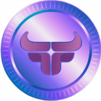
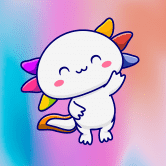
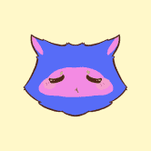

BarnBridge Barnbridge 是一个想法 & 白皮书最初是在 2019 年第二季度构思的。当时，MakerDAO 开始获得主流意识，并激发了现在被称为 DeFi 或去中心化金融社区的想象力。 一年
Barter Smartplace Barter Smartplace 有一个关键功能 - 基于使用电子签名的数字法律合同进行交易。今天，随着技术和法律框架的发展，通过数字通信远程签订贸易协议和签署法律文件已成为
BasementDwellers V2 Basement Dwellers 是一个受 meme 文化和游戏玩家刻板印象启发的项目。 如果您在语音聊天中与您的朋友进行 meme 交流时，已经连续几个小时坐下来研究您最喜欢的游戏，那么您将
Bastard Gan Punks V2 BASTARD GAN PUNKS 的第 2 版比 BOOMER CRYPTOPUNKS 和 BOOMER CRYPTOPUNKS 更酷、更好、更傻。 版本 1 混蛋 GAN 朋克。 这一次，所有 CRYPTOPUNK 属性都被提取出来，并用 GAN 训练了它们所有组合的新数据集，以生出更多
Bastille De La Bouje Bastille De La Bouje 是 Bouje Finance 生态系统的第三层，重新引入了坚实的 APR 重置概念，专注于用户的安全性和可持续性，此外还拥有动态 APR 结构，以最大限度地提高用户收益并为
Battle Derps Battle Derps 是一款自上而下的多人 PVP 射击游戏，适用于桌面和移动 metamask 浏览器。 第一季已经开始，将在大约 1 个月后结束。 目前，我们的目标是生存并尽可能多地杀死敌
BattleBlockz BattleBlockz 是 Zexie Studios 打造的第一款 3D 竞技 WAX 游戏。区块链已被一个名为 The Ravenous 的派系感染。你会选择加入他们的世界统治目标，还是与 The Collective 联手拯救我们所钦佩的 The Wax 区块链
Bauhaus Blocks Bauhaus Blocks 是 8192 个可证明稀有的受包豪斯启发的 NFT 的生成集合。 由 372 个独特的块以四种不同的格式和调色板连接而成。 第一个“风格指南”，包豪斯引发
Bazaar Marketplace Bazaar Marketplace 支持任何符合 ERC-721 标准的 NFT，并将其置于世界上产量最高的 NFT 游戏之一 CryptoBlades 的前面。 您不仅可以查看您的 NFT 的具体详细信息，而且我们的费用
Beamswap Beamswap 是在 Moonbeam 链上具有自动做市商的去中心化交易所。 借助 Yield Farming / Bridge / Faucet Service / Launchpad / Syrup Pools 等各种其他功能， 对于在 Moonbeam Chain 上寻找 Defi 的每个人来说，都有一些
 Bear Game NFT 渔民和熊在大草原上争夺诱人的 $SALMON 奖品。 玩通过以太坊链为 NFT 持有者提供效用的游戏。 1 美元鲑鱼 = 1 美元鲑鱼。 $SALMON 在 SALMON Game 生态系统中没有其他功能，并且不能
 BecoSwap BecoSwap 是基于 KardiaChain 链网络开发的 DeFi 协议。 在该协议中，用户可以通过 Launchpad、Yield Farm、Lottery、NFT 市场等一系列令人兴奋的功
Chronoswap Chronoswap 是 Cronos 区块链上第一个专注于提供一流交易体验的去中心化交易所 (DEX)。 为您的资产提供真正的效用。 重新控制您的代币并释放其全部潜力 通货紧缩机制
 Circular Art Circular Art 是一个生成艺术平台，旨在以可持续方式资助公共产品，同时为艺术家提供一个茁壮成长的平台。 关于乐观 哇！连接方式 @CryptoTallzy 完全铸造！450/450 这意
Citadel Of The Machines 一个不同于其他物理沙盒 IDE 的游戏世界 一款 3D 冒险解谜游戏。 可玩的 NFT 角色。 一个值得探索的世界。 永恒的过去。 雷击使飞船的计算机终于苏醒。 唯一能发挥作
$CTV Airdrop Crypto TV (CTV) 是第一个以英语广播的电视网络。将于 2022 年 9 月正式开播。CTV 目前在阿联酋（迪拜）总部拥有强大的员工队伍，包括记者（包括新闻编辑室工作人员
CSE - Community Staking Experiment 这个想法很简单，作为一个社区，我们想要支付的东西而不是骗局。社区质押实验的存在是为了展示社区在一个伟大平台背后可以做什么的奇迹。 我们的每日拍
CTENA Finance 使用新的 CTENA dApp，您可以：I) 购买 CTENA 代币 II) 质押代币 III) 投资我们的 DeFi Vault IV) 投资我们的 CTENA 指数基金 [beta]： CTENA 是具有自动流动性和燃烧功能的传统代
CTV DEX Aggregator CTV DEX Aggregator 是一个专业的 DeFi 仪表板，将最流行的 DeFi 协议和区块链聚合在一个 dapp 中。 CTV DEX Aggregator 创建了一个对有经验的用户和新手都很有用的一体化解决方案。 CTV DEX 聚合器
 CUBE ITAM NFT 市场追踪币安智能链网络上现有的 NFT，是 NFT 交易的市场。 ITAM NFT 市场通过利用我们的中间件技术连接游戏资产和市场。我们连接数字世界。 另一个 P2E 游戏
CubeSmasher 怎么玩 粉碎 100 个立方体以提交 1 个挖矿权益（例如：200 个立方体 = 2 个权益） 每小时有 1000 CUBE 奖励根据玩家的挖矿权益按比例分配给玩家 访问 cube.money 提取您的 CUBE 代
Cubfinance Cubfinance 的母公司 Leofinance 是一个成熟的项目，在构建基于区块链的应用程序方面拥有 2 年的跟踪记录。如今，DeFi Yield Farming 应用程序只有一毛钱。 Cub Finance 与众不同，因为它是
 Cubie Cubie Minting 在 https://mint.cubie.art/Cubie 是一个社区驱动的 NFT 和 3000 TRX 铸币厂。 Tron 上的 GameFi 项目。探索广泛的 Cubies 系列！普通、独特、稀有、史诗和传奇，它们都很可爱，各有特色。共有 150 个独特的
CuckooFinance 农业起始块：#20880000 链：多边形 预计目标日期：2021 年 11 月 2 日星期二 00:42:49 UTC 没有预售。您只能在 QuickSwap 上购买 CUCKOO 什么是杜鹃？ Cuckoo 是一种去中心化的
 CUE Protocol CUE 协议中心是 CUE 协议团队构建的所有 dapp 将出现的地方。 去中心化应用程序包括： 社区投票 NFT 市场 适用于所有 BSC NFT 的 NFT 库 - 在一个地方查看所有 BSC NFT 彩票游戏 预测
 Cukies World Cukies World 是 Tron Network 开发的第一个游戏赚钱游戏。我们有 12,000 个可用的 Cukies (NFT)，它们是游戏的主要角色。 根据稀有度的不同，有 6 种不同类型的 Cuki，当您铸造
Cup.finance 今天，我们很高兴地宣布 Cup.Finance 的 alpha 版本发布——以太坊区块链上的去中心化体育数字资产市场。 Cup.Finance旨在成为以流行体育牌照为核心的基于区
Cupcake Finance 月亮是煎饼做的。 在银河系中最受欢迎的去中心化平台上交易、赚取和赢取加密货币。 被数百万人使用。 数以亿计的信任。 PancakeSwap 拥有任何去中心化平台中最多的用
 Cupcats Official 当我和我的男朋友（鲶鱼）谈论我想买一个松饼锅时，我想到了 Cupcats 的想法。我真的很喜欢纸杯蛋糕和松饼，而且我的猫太多了。我不打算创建 NFT 集合，但我学到
Curious Addys' Trading 欢迎来到好奇的 Addys 交易俱乐部！我们收集了 5,000 只可爱的章鱼，准备与您一起探索 NFT 和加密货币。我们的目标是成为 NFT 新手和加密货币新手的默认第一站，因此我
Cute duck finance 简介 特点 Cute Duck Finance 是一个去中心化的多链农场收益项目，在币安智能链、Polygon（即将推出）和 KuCoin Chain（即将推出）上运行。 CDUCK Finance 将提供这些服务
Cutey Cutey 是一个 Polygon 收益农业项目，具有低排放率、高收益和 30,000 个 CUTE 代币的有限上限。 Cutey 是一种不太常见的 cutie 拼写——一个被认为可爱或有吸引力的人的非正式词。它可
cXc.world cXc.world (cXc Music) 是一个显示来自世界各地的本地音乐的地图。 On-chain Ups 策划本地排行榜，并奖励参与（Via Ups）的音乐家和听众 BLUX，如果音乐家 PURPLE 进入全球排行
CyBall CyBall 是一款以未来主义足球为主题（美国：足球）、基于 NFT 的游戏，用户可以在其中收集和组建 CyBloc 团队并在线对抗其他团队，或者在 CyBall 的生态系统中交易和指导新
Cyber Arena CYBER ARENA 是一款 PVP 战斗卡牌游戏，其游戏玩法灵感来自炉石传说和万智牌 - 但有一些独特的曲折。玩家从 AnRKey X 宇宙中的角色构建他们的游戏卡牌 (NFT)，并与其


 上的 DeFi 交易所问好，参加比赛 !")


 协议，提供了一套 DeFi 工具。")

 上运行的去中心化、去信任的区块链游戏！类似于过去的FOMO3D！")